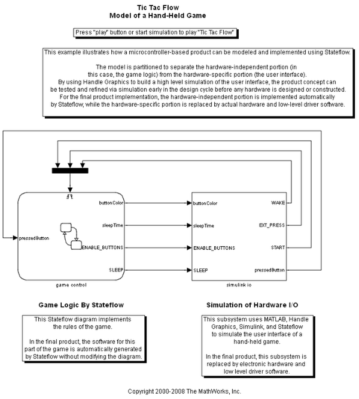
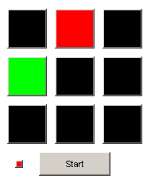

Tic-Tac-Flow: 携帯ゲームのモデル
これは、仕掛け付きの古典的な三目並べのバリエーションです。各プレイヤーの最後の 3 つの動きのみがカウントされます。そのため、ユーザーも対戦相手の最後の数手の順序を把握する必要があります。これにより、ゲームプレイに重要な特異性が加わります。
モデルでは、互いに対話するいくつかの Stateflow® チャートを説明します。ロジックに基づいたイベントが Stateflow でどのくらい厳密に自然に捕捉されるかを示します。また、Stateflow の並列サブステート、グラフィカル関数、MATLAB® ハンドル グラフィックスなどの Stateflow セマンティクスも説明します。モデルは、ゲーム制御を必然的に I/O と区別するいくつかのサブステートに分けられます。これによって、ゲーム制御チャートから生成される Stateflow コードをハードウェア コンポーネントで容易に再利用することができます。
GUI は、Stateflow シミュレーションと対話する MATLAB Figure として実現されます。ボタンのコールバック関数は、入力を Stateflow チャートに送出します。
